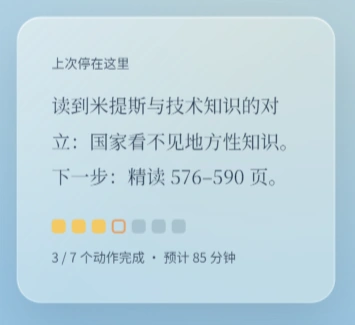
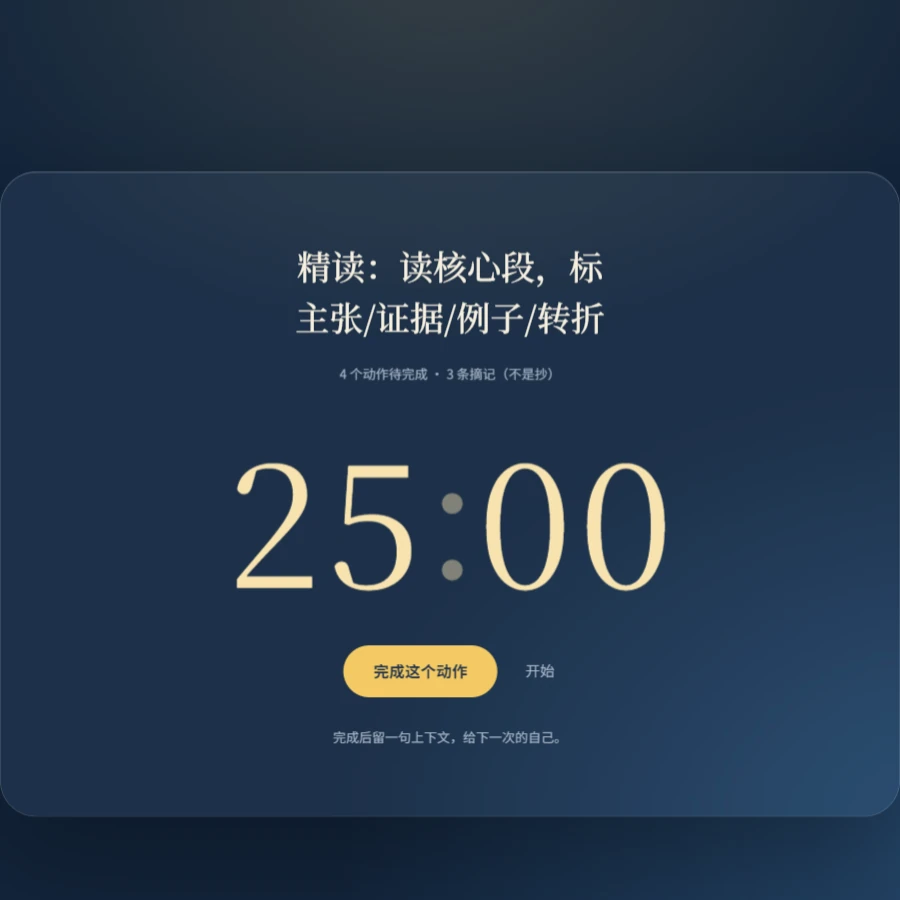

手机是所有任务的入口，也是最大的干扰源。
打开它查一个词，二十分钟后你在看别的。问题不在意志力，在入口。
学习助手把入口从手机挪到桌面上一个不能刷视频的实体：你说一句，它拆成步骤；完成一步，它记录；离开座位，它提醒。
它不测注意力，只记专注行为：任务计时、在座检测、中断自报。这条边界写进了论文。
160 毫米，两轮
外壳 100 × 100 × 150 mm，壳底离地 15 mm。停靠时后仰 15°，屏幕正对人眼；轮子在壳外露出一半，拿起就能站。
| 外壳 | 100 × 100 × 150 mm内腔 95 × 95 × 145 |
|---|---|
| 轮径 | Ø60 × 12 mm，两只轴高 30 mm |
| 壳底离地 | 15 mm轮子露出，整机不蹭桌 |
| 停靠角 | 15°底座 100 × 80 mm |
| 整机质量 | 约 389 g含 2S 电池 |
| 重心 / 摆长 | 73.6 / 43.6 mm电池压在最下 |
| 屏幕 | 2.0 英寸 320 × 240SPI · ST7789 · 屏窗 46 × 38 |
| 主板 | 90 × 72 mm + DevKitC竖置屏后，z 84–96 |
| 电池 | 2S 18650内胆净空 40 × 66 × 25；整包约 37 × 65 × 19 |
电池压在最下面，重心落在轴上方 43.6 mm。12° 倾角每轮需要 17.3 mN·m，N20 6 V 200–300 rpm 留了 1.4 倍余量。内部从下到上是电池、喇叭、主板、屏。
外壳为猫形概念渲染；结构件用 PETG 打印，前壳、后壳、电池盖分三件。
三层，一台机器
云端负责智能，上位机负责记录，机器人负责在场。三者用 JSON 说话。
云端ASR · LLM · TTS
讯飞听写转文字，DeepSeek 拆任务，Edge-TTS 回语音。断网时回退本地模板，核心计时和记录照常。
上位机FastAPI · SQLite · 两个 WebSocket
学习台、任务库、日报周报。一个 WebSocket 给页面，一个给机器人；默认只监听本机，音频不落盘。
机器人ESP32-S3 · 双核
core1 独占 1 kHz 控制环：IMU、姿态、串级 PID、PWM。core0 跑屏幕、语音和 Wi-Fi，不碰控制时序。
1 kHz 和 Wi-Fi 共存是这台机器最难的地方。T07 测的就是控制周期抖动：σ ≤ 100 µs，最大 ≤ 500 µs。
电的路径
电池是星点。5 V 支路和电机支路从这里分开，各自计量。
- 5 VUSB-C 输入适配器 ≤ 2 A，只受电
- 8.4 VIP2326 升压充电CC 1 A，CV 8.4 V；NTC 看电芯温度
- 6.6–8.4 V2S 1865015 A 保护板；过充、过放、短路它兜底
- 5 VMP2315 降压2 A，500 kHz；FB 40.2 k / 7.5 k
- 3.3 V3.3 V LDO合并板用 DevKit 板载；传感器、屏幕逻辑、按键
另一条路：电池 → DRV8871 ×2，限流 1.8 A/轮 → N20 ×2。
插上底座，只发生一件事：VBUS_DET 变高。5 V 不关，固件把电机 nSLEEP 拉低，屏幕和语音继续工作。早期版本用三极管直接把 5 V 断掉，放上底座就黑屏，这个电路已经删了。
想亲手转一下？转一下板子 ↗
电源板六页原理图 · 顶层 ERC 0 错 0 警告 · 网表 47 网络 / 155 节点 · 四层板 · KiCad
这周写完文献综述
这是你说的话。选一个模板，看它怎么拆。
一句话
- 确定检索关键词检索式30 分
- 检索并筛 20 篇20 篇清单60 分
- 读摘要做表格四格表90 分
- 按主题写 3 段三段初稿120 分
- 统一格式与引用定稿与引注45 分
离线模板拆解，不联网也能用。自定义任务才调用 LLM，输出必须有 title / output / minutes，缺字段直接回退模板。
拆成动作
晴蓝玻璃
上位机不另写一套界面。Host 把桥接脚本注入学习台，镜像状态、接语音、驱动机器人；学习台只有五屏。
完成一步时留一句上下文：读到米提斯与技术知识的对立，下一步精读 576–590 页。下次回来，今日页右栏就是它。

五个页面
今日、章节、专注、收束、复习。一页只回答一个问题；表单只在需要时出现。
八个语音意图
开始、完成、研究、停车、切换、走神、复习、日报。否定句先短路，说「还没完成」不会被判成完成。
专注口径
毛时长减去落在专注区间内的离开时间，才叫 focus_min；在座率单独报，不合成一个「专注分数」。
外观
晴蓝玻璃：天光蓝底、奶油色磨砂卡、黄油色只给当前动作；外观三档 晴蓝 / 奶油 / 雾灰。专注页沉进夜蓝玻璃窗，计时器是唯一亮的东西。
现在到哪了
原型在跑，板子在画，样机还没装。这一页的数字都是设计值，实测等样机。
已完成
- 电源板六页原理图顶层 ERC 0 错 0 警告
- 四层板重排版 v1布线完成，DRC 10 项待清
- 学习台 v2 原型晴蓝玻璃 · 17 项冒烟
- Host 与桥接44 项验收通过
- 文献清单16 条，外文 6 条
进行中
- 合并主板分层与电源链已定
- 猫形外壳与内腔100³ 外壳
- 联测采购与器件选型
- 开题报告与文献综述
待开始
- 打样、贴片、装配
- 平衡调试T01–T08
- 语音链路I2S → ASR
- 5 人 × 3 次专注实验
原理图、PCB 与算法文档都留在 02_设计方案，一版一个文件名，没有覆盖旧版。

学习台 · 专注夜蓝玻璃窗，只剩计时器